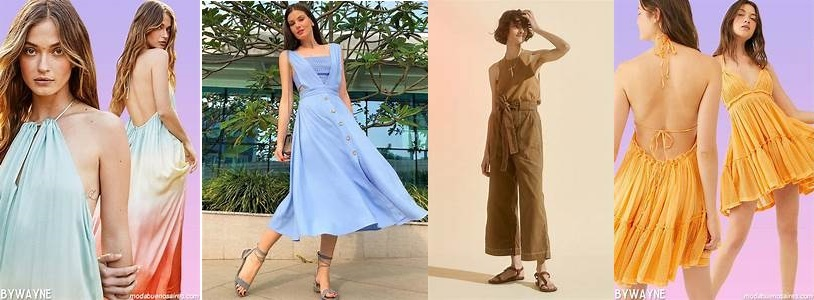

Costile
Costile
Moda

Durante cada año ciertos colores son aquellos los que representan esas fechas, los cuales marcan un nuevo ciclo ,en este año 2021 los dos colores fueron decididos por el Instituto Pantone del color , eligiendo los dos fantasticos colores que marcaran tendencia.La paleta consiste en una gama de tonos amarillos y grises, que representa la esperanza y la fortaleza para estos tiempos de pandemia.
En los colores mas populares segun MELINA ABACHE de Voge , los colores mas populares de este año 2021 , son el lavanda,el amarillo que como mencionamos fue el que representa este año, el naranja o color mandarina,el verde limon, el blanco que nunvca pasa de moda y es un color basico que deberias de tener , aparte de los colores rojo y azul.